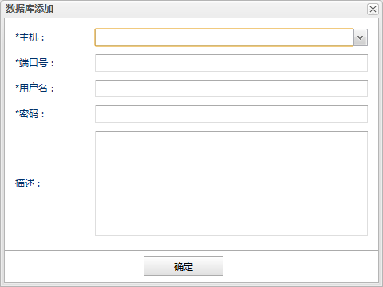
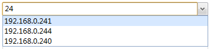

如果想对单实例数据库进行监控，可以在数据库监控面板的添加按钮下拉菜单中选择单机，打开数据库添加对话框进行添加。如下图所示:

主机 数据库连接的主机地址。这是一个下拉列表，只能选择下拉列表中的主机地址（即已经启动数据库代理的主机）。也可以在输入框中输入字符串过滤下拉列表快速查找到主机地址。如图所示：

端口号 数据库连接的端口号。
用户名 数据库连接的用户名。
密码 数据库连接的密码。
描述 描述信息。